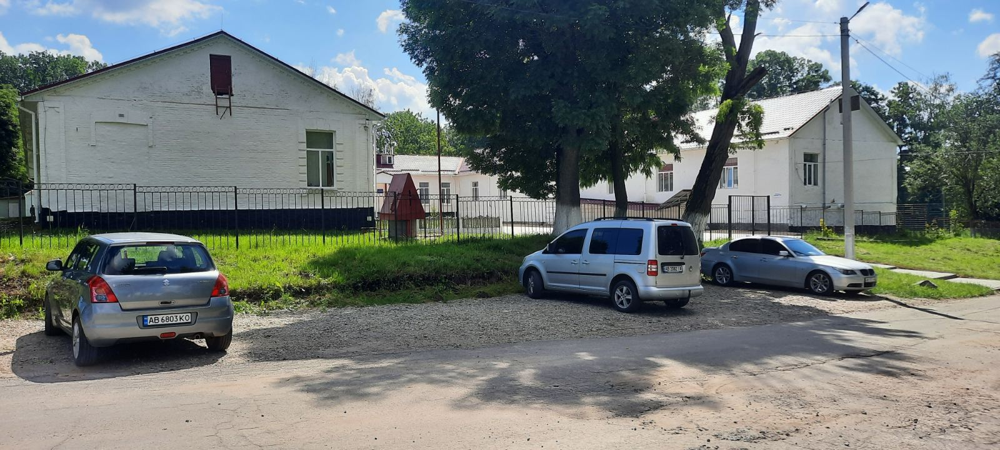
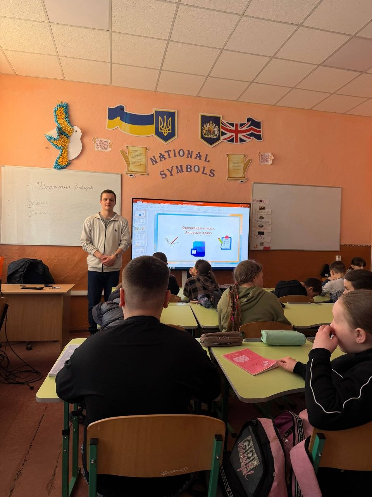
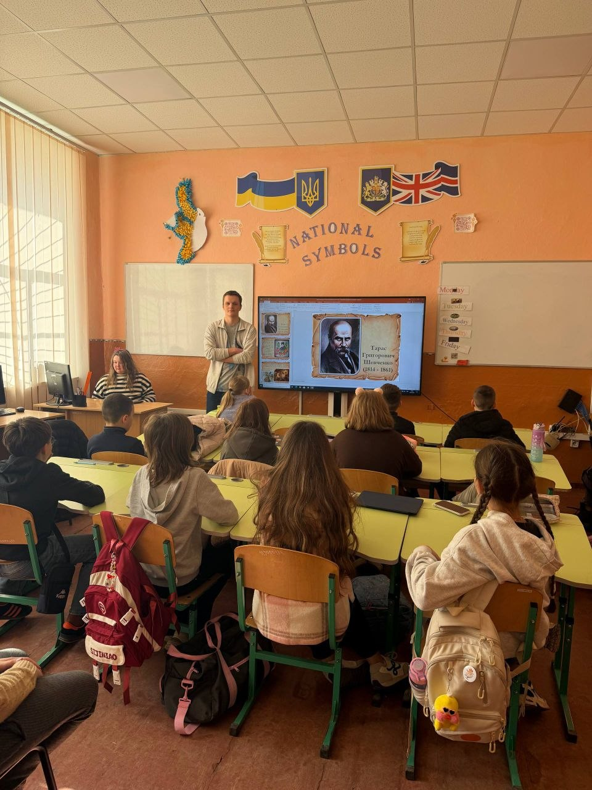

Педагогічна практика тривала з 23 лютого по 20 березня 2026 року у комунальному закладі «Лука-Мелешківський ліцей» . Під час проходження практики я мав можливість ознайомитися з організацією освітнього процесу, особливостями роботи вчителя інформатики, навчально-методичною документацією закладу освіти, а також безпосередньо брати участь у проведенні уроків і виховних заходів.

Під час педагогічної практики в КЗ «Лука-Мелешківський ліцей» було проведено 16 уроків інформатики для учнів 5-А, 5-Б, 5-В, 8-А, 8-Б, 8-В, 9-А, 9-Б класів за навчальною програмою Н. В. Морзе по темах:
Під час практики використовував інтерактивні методи навчання, зокрема: розробку мультимедійних презентацій у програмі PowerPoint та навчальних завдань для закріплення матеріалу на уроках.

Під час педагогічної практики було проведено 6 виховних годин для учнів 5-В класу. Тематика виховних заходів була спрямована на формування здорового способу життя, безпечної поведінки, моральних цінностей та розвитку патріотичної свідомості учнів.

Педагогічна практика стала важливим етапом мого професійного становлення як майбутнього вчителя інформатики. У процесі проходження практики я отримав цінний досвід організації та проведення уроків, взаємодії з учнями різних вікових категорій, а також ознайомився з особливостями роботи педагогічного колективу.
Під час проведення занять я намагався застосовувати сучасні методи навчання, використовував мультимедійні презентації, практичні завдання та інтерактивні підходи, що сприяло підвищенню зацікавленості учнів до навчального матеріалу.
Практика допомогла мені вдосконалити педагогічні навички, навчитися планувати навчальний процес, правильно організовувати роботу учнів та оцінювати їхні знання. Отриманий досвід є надзвичайно важливим для моєї майбутньої професійної діяльності.